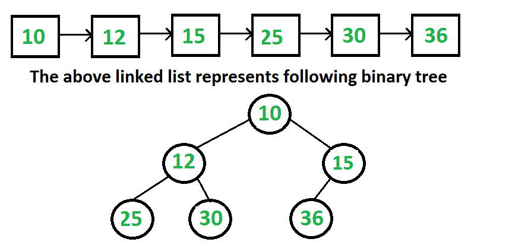
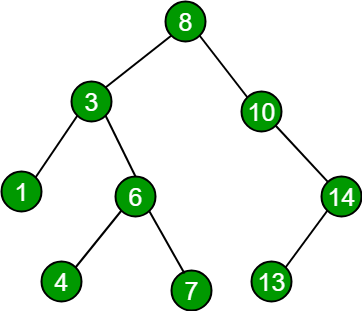

What is a Tree?
A Tree, in computer science terms, is a collection of nodes starting at root node, where each node is connected to zero or more child nodes via edges. No reference can be duplicated, and no nodes can point back to the root.
Binary Tree
A Binary tree is a tree that each node has at most two children, left and right child.
Binary Trees can be traversed in depth-first or breadth-first order.
Depth-first Order: Go to node N, recursively traverse N's left subtree, then rescursively travers N's right subtree.
Breadth-first order: visit every node on the same level before going to the next level.
A binary tree can also be viewed as a list, where the index for root is i, and left child is 2i + 1, right child 2i + 2, and parent(if not root, which is 0) at (i-1)/2.
Binary Tree normal representation

Binary Search Tree
Binary Search Tree is a binary tree which each node contains one comparable key, and the key's value is greater than any key stored in it's left subtree, and smaller than any in its right subtree.
Adding and Removing Nodes
While adding nodes is pretty straigtforward as you literally just traverse through the binary search tree and find whichever node is smaller or greater than the current value, removing node is quite complicated. You first mark the node to be delted, then find the minimum key in that node's right subtree, you switch those 2 values, and then you can delte the minimum key node recusively. This method keeps the binary search tree's form as the minimum node in the right subtree of the node to be deleted will always be larger than any values in its predecessor's left subtree, and smaller than any values in its predecessr's right subtree.